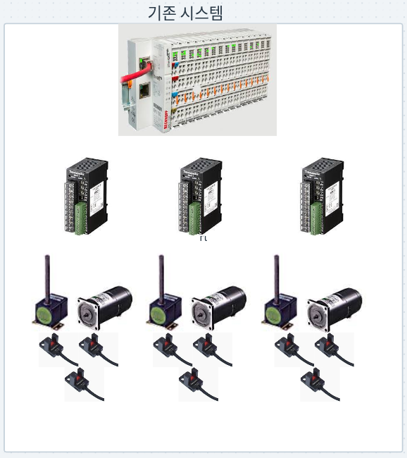
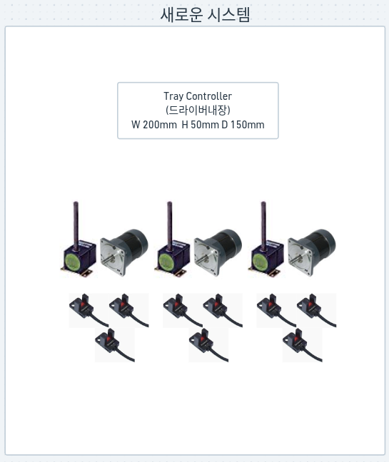
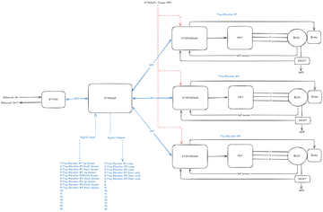

반도체 후공정 장비(핸들러·소터)에 들어가는 JEDEC 트레이 엘리베이터 3대를, 티원이 직접 설계·제작·납품하는 전용 제어기 1대로 통합합니다. 장비는 지시만 내리고, 정지와 안전은 제어기가 스스로 완결합니다.
지금은 엘리베이터 제어가 장비 전체 프로그램 안에 섞여 있습니다. 프로그램이 DO(구동) 신호로 모터를 움직이고, 센서가 정지 위치를 잡으면 그 신호를 꺼서 멈춥니다. 정지 판단의 주인이 장비 프로그램인 구조입니다.
디버깅하다 브레이크포인트로 프로그램을 잠깐 멈추거나, 제어 프로그램이 오류로 갑자기 죽으면 — 출력은 마지막 상태를 유지하므로 켜져 있던 구동 신호를 끄지 못합니다. 모터는 명령대로 계속 밀고 나가 기구 끝단에 충돌합니다. 자중으로 흘러내리는 사고가 아니라, 정지 명령을 못 내려서 생기는 사고입니다.
장비가 바뀌어도 반드시 들어가는 공통 기능인데, 매번 장비 프로그램 안에 끼워 넣고 함께 검증해야 합니다.
기존 MSC-1 AC 스피드컨트롤러 + 6W AC 브레이크 모터는 30분 단시간 정격이라 반복 운전 지속성에 제약이 있습니다.
엘리베이터 3대를 위해 컨트롤러 3대와 통신 커플러가 따로 자리를 차지하고, 그만큼 배선도 늘어납니다.
장비는 이제 제어기에 시작 · 정지 · 즉시중단만 지시합니다. 속도 조절, 센서를 보고 멈추는 판단, 정전·고장 시 홀딩은 전부 제어기가 스스로 완결합니다.
운전자는 페달만 밟고, 미끄러짐을 막는 건 차가 알아서 합니다. 마찬가지로 장비 프로그램이 멈춰 있든 죽어 있든, 제어기는 센서를 보고 엘리베이터를 스스로 세웁니다.
정지 센서 4점(상·하 리밋 + 트레이 유무 2점)을 축 드라이버에 직접 연결했습니다. 감지에서 정지 실행까지 0~1 ms입니다.
감독 MCU를 한 번 거치는 구조였다면 통신 대기 때문에 3~11 ms가 걸립니다. 그래서 정지 판단을 축에 내렸습니다.


2LF25N-3 리니어 헤드(랙&피니언, 수직 스트로크 300mm)와 기존 기구 프레임, 센서를 그대로 씁니다.
MSC-1 컨트롤러 3대와 MBM206-412 6W AC 브레이크 모터 3대를, 24V BLDC(홀센서·무여자 브레이크 내장, 30W급 연속정격)로 바꿉니다.
드라이버 3개를 내장한 제어기 1대가 컨트롤러 3대와 커플러 자리를 대체하고, EtherCAT 슬레이브로 장비에 붙습니다.

| 계층 | 하는 일 | 하지 않는 일 (경계) |
|---|---|---|
| 상위 장비ETHERCAT MASTER | 축별 시작·정지·방향 지령과 상태 폴링, 즉시중단(abort) 발행, 장비 생산량(UPH) 스케줄링 | 실시간 모션·전류 제어에 관여하지 않음. 정지 판단도, 서보를 언제 끌지도 결정하지 않음 |
| 감독 MCUSUPERVISOR | 통신 중계(EtherCAT과 축 사이), 축별 상태 확정, 서보 OFF 타임아웃 판단, 이번 이동에서 어느 센서로 멈출지 지정, 설비 I/O, 수동 조작 패널 | 각 축의 전류·PWM 루프에 개입하지 않음. 정지 센서를 직접 받지 않음 — 전량 축으로 이관 |
| 축 드라이버 ×3AXIS DRIVER | 홀센서 FOC + 속도 PI 로컬 완결, 브레이크 구동, 정지 센서 4점 수신과 정지 실행, 폴트 시 최우선 차단 | 상위 시퀀스 판단을 하지 않음. 절대위치 제어·축간 보간을 하지 않음 |
축 드라이버는 네 가지를 지시 없이 스스로 판단해 실행합니다 — 끝단 리밋 감지, 통신 두절, 폴트 발생, 홀딩 시간 초과.
즉 감독 MCU가 멈춰도, 통신선이 끊겨도 각 축은 감속·정지하고 브레이크를 겁니다.
모터에 무여자 브레이크가 내장됩니다. 정전·고장·비상정지로 전원이 사라지면 스프링이 자동으로 꽉 잡습니다.
랙&피니언은 스스로 잠기지 않기 때문에, 이 브레이크가 트레이를 붙잡는 최종 수단입니다.
소프트웨어를 거치지 않는 하드와이어 경로로 모터 전원(토크)과 브레이크 전원을 함께 차단합니다.
토크만 끊는 STO는 금지했습니다 — 브레이크 회로가 고장 나 열린 채로 남으면 힘도 브레이크도 없는 상태가 되기 때문입니다.
디버거로 감독 MCU와 축 드라이버를 모두 정지시킨 상태에서 STO를 넣어, 펌웨어 개입 없이 브레이크가 잡히는지 확인합니다. 정전 차단·폴트 주입·통신 두절 시험도 전 케이스 통과해야 출하합니다.
브레이크가 잡히기까지의 처짐량은 브레이크 체결 시간에 좌우됩니다(후보 모터 카탈로그값 100 ms). 실제 낙하량을 변위계로 측정해 허용치 안에 드는 것을 확인한 뒤 납품하며, 허용 기준은 고객 기구 사양에 맞춰 협의합니다.
축마다 독립적으로 돌아가는 단순한 상태 흐름입니다. 상위 장비는 이 상태와 정지 사유를 통신선으로 그대로 읽습니다.
정상 상황에서는 감독 MCU가 기본 5초 뒤 브레이크로 전환합니다(발열을 보며 조정). 통신이 끊긴 상황을 대비해 축에도 별도의 상한을 두어, 상위가 없어도 축이 스스로 홀딩을 끝내고 브레이크를 겁니다.
짧은 정지마다 브레이크를 여닫으면 마모와 대기 시간이 늘고, 전류로만 붙들면 발열이 쌓입니다. 그래서 짧은 정지는 서보락, 긴 정지는 브레이크로 나눕니다. 전환 시점은 실제 장비 사이클을 재현한 발열 실측으로 확정합니다.
장비가 이미 쓰는 EtherCAT 망에 그대로 연결합니다. 장비까지 끌 배선이 통신선과 전원뿐이라 설치가 빠르고, 모터·센서 배선은 제어기 근처에서 짧게 정리됩니다.
제어기 안 소프트웨어를 통신선으로 갱신합니다. 감독은 물론 축 드라이버 3개까지 같은 경로로 갱신되며, 커버를 열거나 케이블을 새로 꽂지 않아도 됩니다.
3축이 모두 정지·브레이크 체결 상태일 때만 업데이트를 허용합니다. 운전 중 요청은 제어기가 거부합니다.
고장 코드·상태·센서 값을 통신선으로 조회하고, 유지보수 모드에서 축을 하나씩 수동으로 움직여 볼 수 있습니다. 이때도 안전 인터록은 하나도 우회되지 않습니다.
제어기 외부 버튼으로 축을 직접 조그할 수 있습니다. 누르는 동안만 움직이고(dead-man), 손을 떼면 즉시 감속·정지합니다. 모드 전환은 키스위치로, 그것도 3축이 모두 멈춰 있을 때만 됩니다.
수동이든 자동이든 지령이 지나는 안전 판정 경로는 하나입니다 — 버튼에서 모터로 직결되는 샛길은 없습니다.
기본 3대에서 더 필요하면 같은 제어기를 통신선에 하나 더 끼우면 됩니다. 새 배선 공사나 재설계가 없습니다.
속도 같은 설정값도 별도 장치 없이 통신선으로 변경하고, 벤치에서 튜닝한 값을 그대로 내려 씁니다.
| # | 합격 기준 | 확인 방법 |
|---|---|---|
| SC-1 | 수직 3kg 트레이 스택을 편도 300mm / 약 8초로 승강 | 3축 각각 왕복 100회 무고장 |
| SC-2 | 정지 중 서보락으로 3kg 홀딩, 실제 장비 사이클을 재현한 반복 운전에서 발열이 허용 범위 | 발열 실측 후 서보 OFF 시점 확정 |
| SC-3 | 폴트·정전·비상정지·서보 OFF 시 무여자 브레이크 자동 체결, 처짐이 허용치 이내 | STO 주입 + 정전 차단 시험 |
| SC-4 | 상위 장비가 축별로 시작·정지·상태·즉시중단을 통신으로 제어 | 마스터 연동 시험 |
| SC-5 | 센서 기반 정지 반복정밀도가 픽·플레이스 허용치 이내 | 반복 정지 20~30회 변위 측정 |
| SC-6 | 3대를 동시에 내릴 때 발생하는 회생 전력을 24V 버스가 흡수 | 3축 동시 하강 시 버스 전압 실측 |
AC 컨트롤러 3대와 통신 커플러가 차지하던 자리를 제어기 1대가 대체합니다. 관리할 장치 수와 배선이 함께 줄어듭니다.
원본 AC 모터는 30분 단시간 정격이었지만, 교체할 BLDC는 연속정격입니다. 이동 구간 발열 제약이 사실상 사라집니다.
설계·제작·검증·유지보수를 티원이 직접 합니다. 해외 벤더 대기 없이 빠르게 개선·맞춤 대응하고, 고객은 한 곳과만 소통합니다.